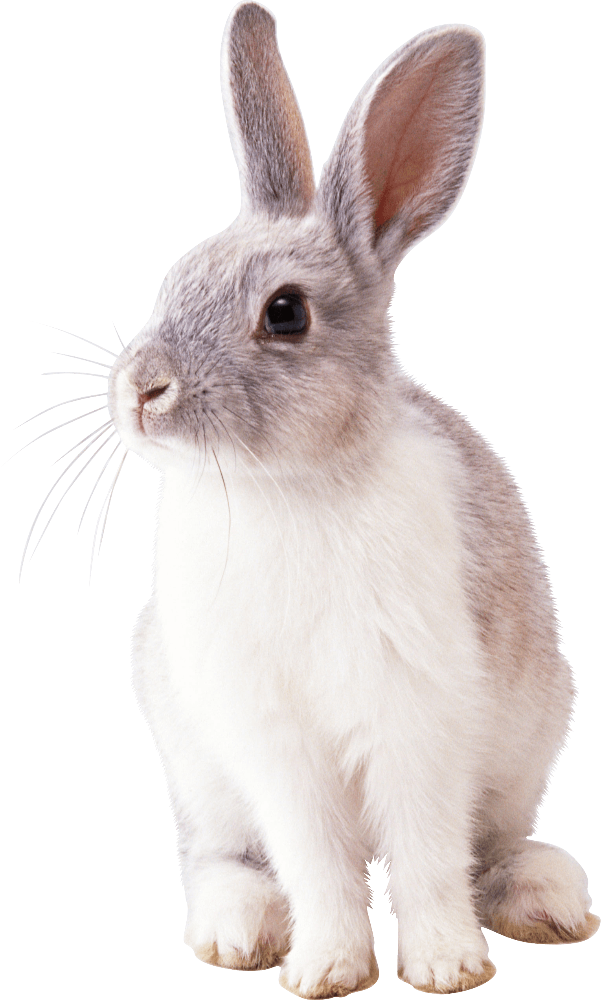

Happy
New Year
Наступает волшебный, сказочный, самый долгожданный праздник в году. От всей души поздравляю с Новым
годом, желаю мира, добра, поддержки близких, взаимопонимания в семье, счастья, радости и, конечно,
крепкого здоровья. Пусть новый год принесет только хорошие события и подарит яркие, душевные
воспоминания. С праздником!

Символ 2023 года
По восточному календарю 2023 год — год Черного Водяного Кролика или Кота. Считается, что эти
животные сулят надежду, плодородие и процветание.
Год Водяного Кролика начнется 22 января 2023 года и закончится 9 февраля 2024 года. Дата
китайского Нового года определяется по лунному календарю и меняется каждый год, но всегда
приходится на период с 21 января по 20 февраля.
Цикл восточного календаря составляет 12 лет. Каждому году соответствует свое
животное-покровитель, четвертым из которых в китайской традиции считается Кролик (или Заяц), а
во вьетнамской — Кот. Именно поэтому году благоволят сразу два животных.
Предыдущие годы Кролика: 1927, 1939, 1951, 1963, 1975, 1987, 1999, 2011.
В китайской мифологии каждый знак зодиака связан с одним из пяти элементов: золото (металл),
дерево, вода, огонь или земля. Последний раз Водяной Кролик появлялся 60 лет назад — в 1963-м.
Кролик — один из самых любимых знаков зодиака в китайской астрологии. Он ассоциируется с земной
стихией, пятью—семью часами утра и символом инь (женское начало мира). В китайской мифологии
Кролик — единственное животное, которое живет на Луне вместе с богиней Чанъэ. В 2013-м Китай
даже назвал свой первый роботизированный луноход «Нефритовый кролик» (Jade Rabbit).
Новогодние поздравления
Пусть в Вашем доме будет всё -
Любовь, Покой, Уют, Богатство,
Пусть будет в нём всегда тепло,
Чтобы хотелось возвращаться!
Пусть старый год заберет все печали,
А Новый — радость принесет!
Любовь, достаток, и в делах — удачу,
А счастье само к вам в гости придет!
Пусть Новый Год море радости, счастья
Подарит тебе в Новогоднюю Ночь!
Пусть станет жизнь сказочной, яркой,
Пусть все заботы унесутся прочь!
Желаю, чтобы Дед Мороз
Мешок Вам радости принес!
Второй мешок чтоб был со смехом!
А третий был с успехом!!!